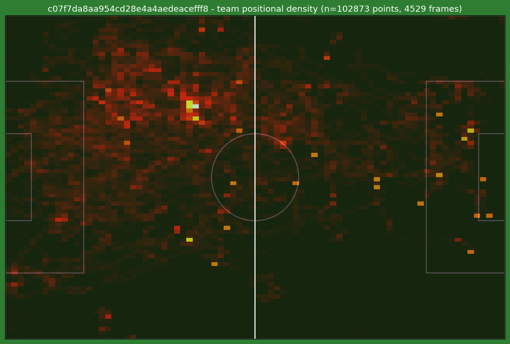
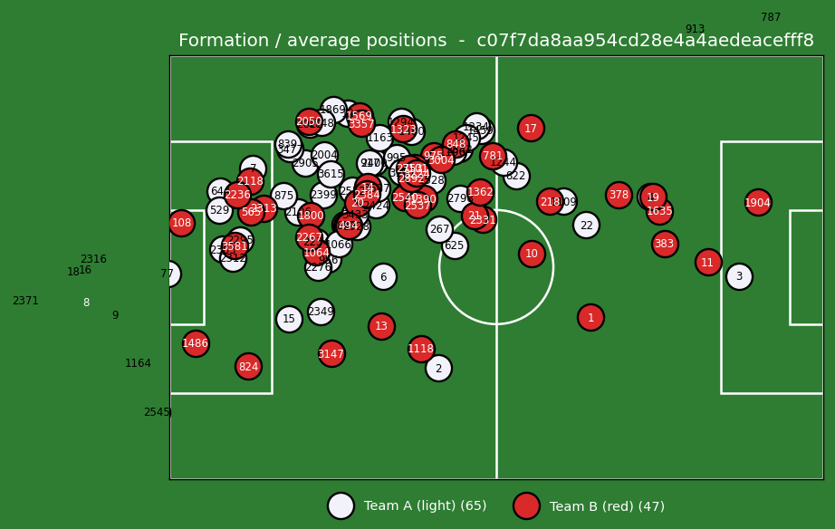
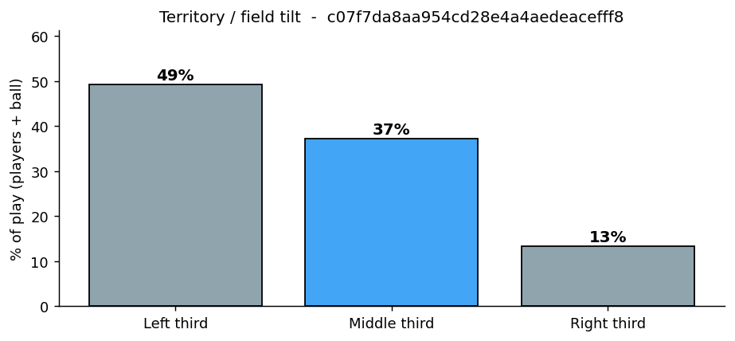

See how it works
A 60-second taste of the real workflow — set up the pitch, find the players,
pick your outputs, and see the analysis. Nothing here is saved; it's just a walkthrough.
1 · Court setup
2 · Find players
3 · Choose output
4 · Processing
5 · Results
Set up the court
Click the far-left corner of the pitch.
Next
Reset
Processing your match…
Starting…
In the real product this runs on our side — you just wait for the email.
Your analysis is ready
Real coach analytics from a Tottenham vs Watford match. Every match gets its own set.

Team heatmap 
Formation 
Territory control
Real output from a processed match — submit yours and we do the same.